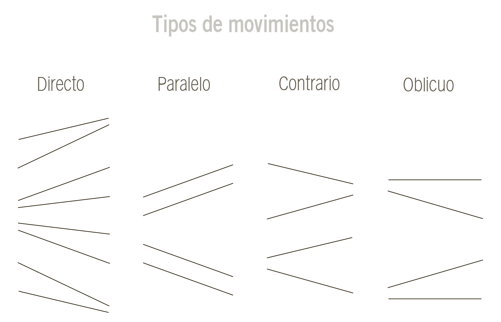
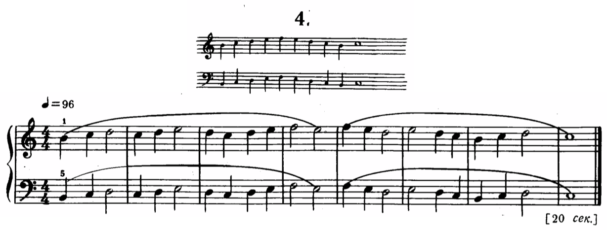
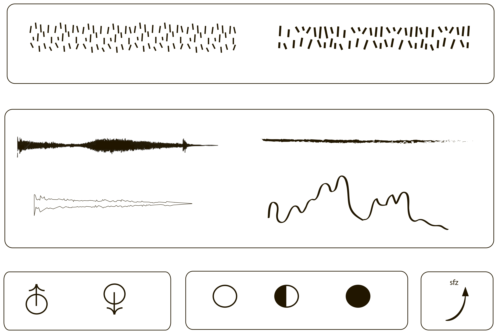

Composición Musical
Clase 002
Intermezzo nº 1 Eb Mayor Op. 117/1
Johannes Brahms
[partitura]
Preludio nº 14 (Preludios)
Schostakovich
[partitura]

Microcosmos - Libro 1 nº 4
Bartok

Signos

Resfrío
Gabriela Sandoval
[partitura]
A B C D E F G H I J K L M N O P Q R S T U V W X Y Z
Hajnal
Venetian Snares
[Bartok Cuarteto Nº1, III Mov - partitura]
002